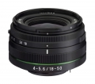
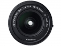
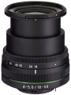
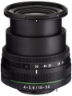
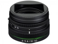
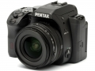

器材库 > APS画幅镜头 > HD PENTAX-DA 18-50/4-5.6 DC WR RE

详细规格
镜头类型
标准变焦镜头
发布日期
2015-02-10
焦距
18mm-50mm
等效35mm画幅焦距
27.5mm-76.5mm
最大光圈
f/4-5.6
镜头结构
11片/8组
光圈叶片
7片
最近对焦距离
30cm
最大放大倍率
0.23倍
滤镜口径
58mm
镜头卡口
Pentax AF
防抖
否
颜色
黑色
尺寸
71×41mm
重量
158g
UVfilter2015-10-06 23:133.75 分
操作性 3.00耐用性 4.00性价比 4.00解像力 3.50色彩还原 4.00机械结构 4.00
产品图 / 样片





评测 / 相关文章
- 详细内容 （存档）